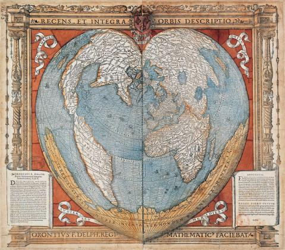
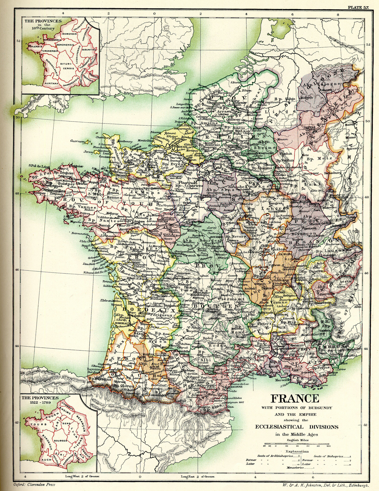

Période de la Renaissance
Introduction
La Renaissance marque une avancée majeure dans l'histoire de la cartographie, avec l'intégration de nouvelles techniques et la découverte de nouveaux continents. Grâce aux explorations, les cartes deviennent plus précises et détaillées.
Les innovations cartographiques
Pendant la Renaissance, l'introduction de la perspective et des progrès dans les mathématiques ont permis une cartographie plus scientifique. Les cartes portulans se sont perfectionnées et l'utilisation des méridiens et parallèles s'est répandue.
Cette carte illustre l'une des premières tentatives de représentation plus réaliste du monde, basée sur les découvertes des navigateurs européens.
La cartographie politique et administrative
À cette époque, la cartographie est également utilisée pour la gestion des territoires. Les cartes sont employées pour représenter les divisions politiques et administratives des royaumes et empires.
Cette carte montre les divisions ecclésiastiques de la France entre 1322 et 1789, illustrant les frontières des diocèses et provinces ecclésiastiques.
Les figures emblématiques de la cartographie de la Renaissance
Des cartographes comme Gerardus Mercator et Abraham Ortelius ont révolutionné la cartographie avec leurs projections et leurs atlas qui ont permis une diffusion plus large des connaissances géographiques.
Conclusion
La Renaissance a ouvert la voie à une cartographie plus scientifique et globale. Les progrès réalisés à cette époque ont jeté les bases des cartes modernes et ont permis aux explorateurs de mieux comprendre et naviguer dans le monde.